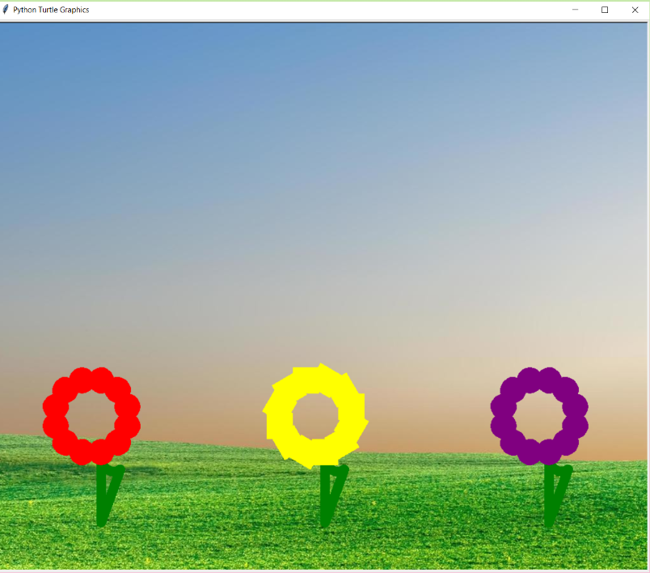
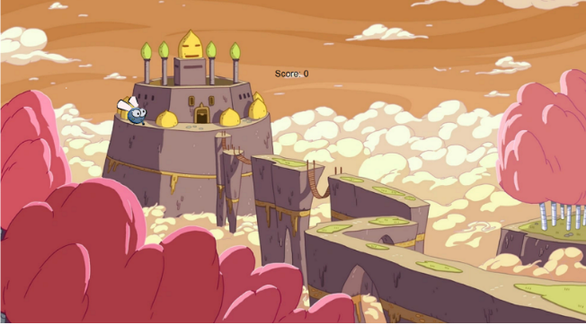
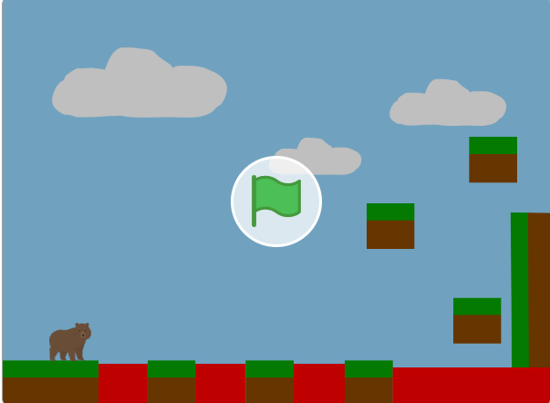
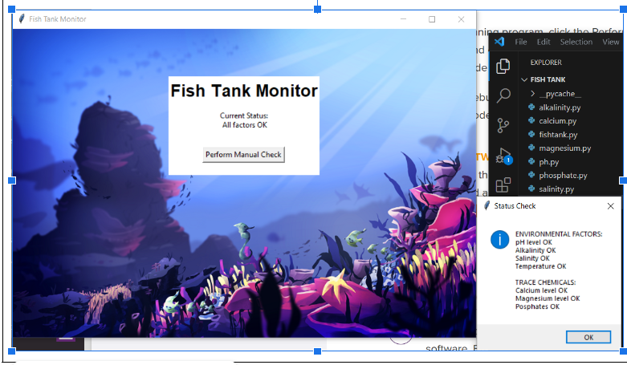
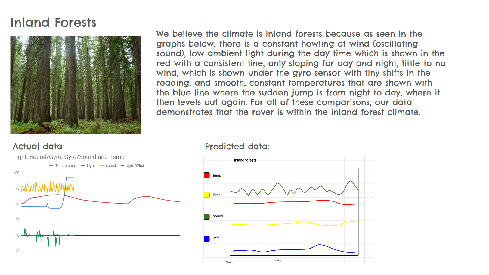
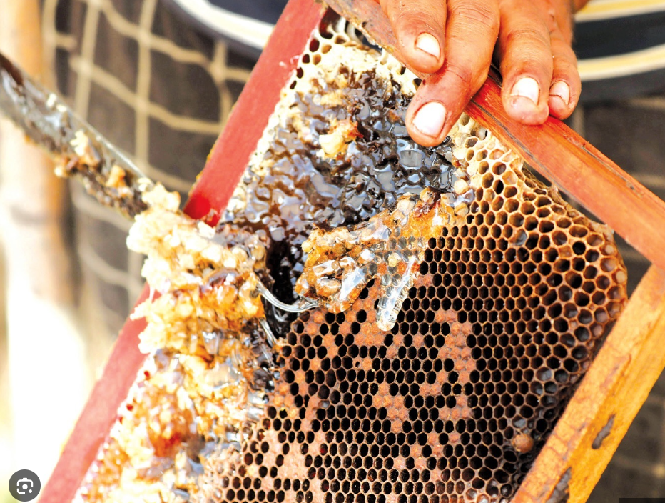
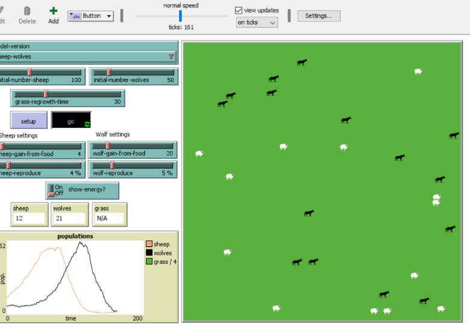

Home
Portfolio
About Me
Jaya's Portfolio Page!

My first project: Create your own garden!

In this project we utilized our lessons from Unit 1 which covered loops, nested loops,
infinite conditions, moving the "turtle icon" and getting input from the user. The game consists of multiple nested loops and repeatedly asks the user for input so that they can
customize their garden. The game first asks how many flowers, then the user is able to control where the flowers are, how many petals they have, what color the petals are,
and what shape the petals are. The game then ends by asking the user if they want to continue gardening or not, determining if the master loop is repeated again or not.The game
incorporates all elements of Unit 1, as well as demonstrates the user of nested loops. The game is able to be tailored to the user's exact wishes. This is demonstrated in the picture
above, which shows flowers with different colors and petal shapes.
My second project: Protect your castle!

In this project we utilized our lessons from 1.2 and implemented several things from it, including a score counter, timer, onclick functions and using random variables in more advanced ways. The game consists of a castle in the
background that the user must protect from various flies that spawn in from random locations. The flies come in from somewhere random and the user has to click on them to "kill" them and protect the house.
After the flies are clicked, they dissapear and are generated from a new random location. If the user fails to click on one in time and it reaches the castle, it simply respawns to give the user another chance. Each time
a fly is clicked the score increments itself to show the user's progress, while the timer counts down from 30 seconds. After the timer runs out, the game shuts down. This is shown in the image with the fly near the castle,
waiting for the user to click on it.
My third project: An Obstacle Game!

In this project we remixed an existing game but put our own twist on it. In our game, we allowed the user to choose what sprite they wanted, as well as incorporated sounds and more backgrounds. The game consists of navingating
the sprite around obstacles, such as lava, rocks, and spikes. If the sprite completes that "level" it moves on to the next one. If the sprite touches lava or spikes, it will restart and have the user start over. The game was
remixed due to the valuable code of keeping the sprite balanced on the "ground" The game essentially runs infinitely, while letting the user choose when to end it.
My fourth project: A pHishy fish tank!

In this project we utilized our debugging knowledge to debug a program that checks whether or not a fish tank is suitable for the fish. We also needed to identify potential security breaks within a user's account and data.
This project demonstrated how it is important to update software and login information. Inside the code, there were several things that needed to be fixed, such as: switching variable values to make a range valid,
making sure that an if statement was correctly calling the right element from a list, fixing the range of a list, and making a variable a nonzero integer so that later calculations could be done correctly.
This ensured that the fish tank could actually be checked for errors and return results instead of failing to run, as it had been previously.
My fifth project: Rover Phone Home!

In this project we utilized our knowledge of sorting data to be able to eliminate possible options of different climates our rover might be in. The object of this project was to identify where our rover was based on
different climate factors like the sun, the wind, noise within the climate, and the temperature throughout the day. We originally recieved a spreadsheet of data to sort and graph, and then we compared it to our predictions of each
climate. After we narrowed it down, we settled on a specific climate, which is Inland Forest. The factors were most similar to our predictions and actual data.
My sixth project: Making Meaning from Data!

In this project we looked at different data sets of data centered around honey production in different areas of the country. The focus of the project was to utilize ways to organize data and look for
meaningful trends. The data was sorted into graphs.
My seventh project: Understanding Complex Systems!

In this project we looked at various simulations that represented real life circumstances. The simulations covered different animal, envrionmental, and biological processes. Through the simulations, the user was able to
manipulate the levels and details of each scenario. This can aid people in understanding how different parts of our world works. For our simulation, we did the wolf and sheep simulation that centers around
the relationship between how many sheep there are versus how many wolves there are. We were able to change the inital amount of wolves and sheep, as well as the inital amount of grass and other environmental factors.
The simulation of wolves and sheep demonstrated the relationship between them and how different factors could affect that.